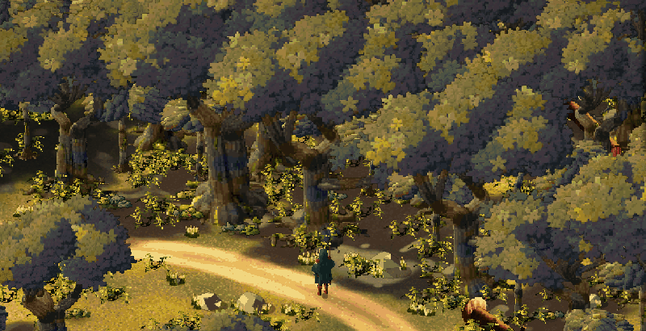
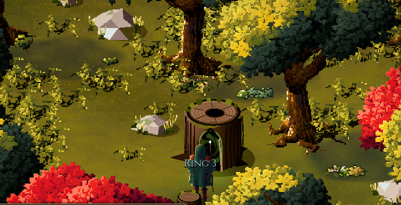
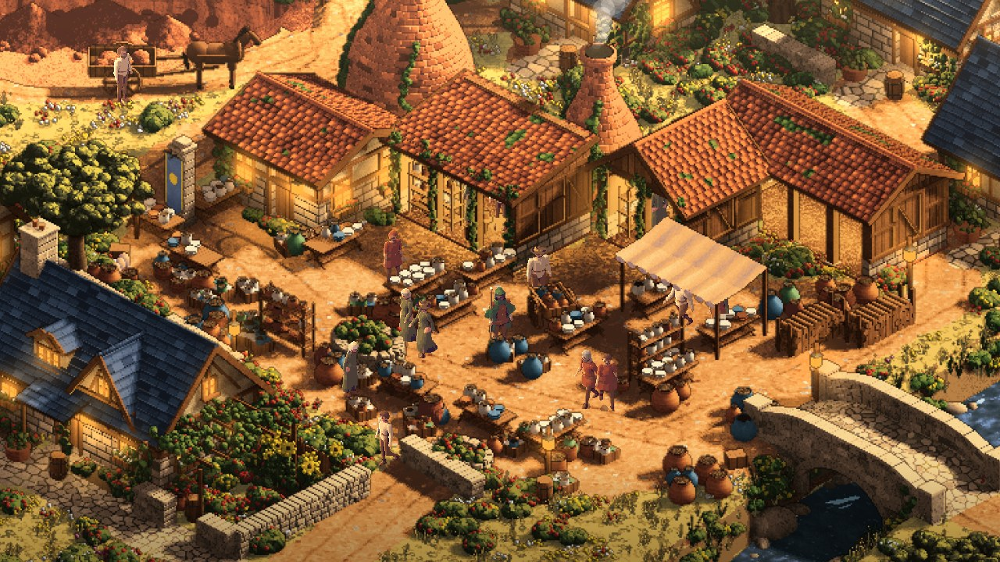

An isometric open-world magic RPG · in development
Sprawl
Everyone can handle magic. Almost nobody throws fireballs.
Everyone can handle magic. Almost nobody throws fireballs.

Sprawl now opens on a title screen. You can shape the person who arrives, and the game shows you how what you do in Oakwell changes them.

West of Oakwell, the trees now close over the path. In a woodcutters' clearing, an old stump has gone hollow, and smoke stands in the cleft at its foot.

Fallen fruit, a quartz seam, a blocked road and a watermill: Oakwell's everyday work is starting to answer what the town actually needs.

Every game begins in the market town of Oakwell, and for now the town is the game. Make the person who arrives, then spend the day as you like:
Scan the reference. Recover the details that define the place. Use them to build the town.

The reference holds the information. The scan makes it specific enough to build.
The defining step is a detailed scan of the image: studying the building shapes, their arrangement, terrain, materials and lighting, then translating that information into the town’s construction.
In Kilnworth, that includes the stepped workshops, twin bottle kilns, pottery court, clay pit and waterside mill. Material colours are sampled into nine-step shade-to-light palettes, helping the reconstruction retain the reference’s character.
The resulting geometry becomes a playable scene with depth and interiors. Rendering and comparison support the process; the reference scan provides its foundation. We are carrying that approach into other towns and landscapes.
Inside the methodMagic is a substrate, not a class. A brawler is not a fighter instead of a mage. He is a mage who only ever learned to point the current inward, into bone and skin and the moment of impact.
A spell in Sprawl is not an entry in a list. It is a coordinate: one pick from each of four axes. What the current is made of, where you point it, the shape it takes and its rule in time. Nobody wrote a spell list, and nobody needed to.
Who you become is measured from how you actually play, and the world gives you a name for it. The quests you are offered come out of what the village has actually suffered, and the creatures you meet are living their own lives when you arrive.
Pick one from each axis. Every combination is a real coordinate in the game's lattice, and the game works out whether it is legal, what it costs and how it looks and sounds.
12 essences × 6 vectors × 10 forms × 6 bindings = 4,320 coordinates, of which 1,068 are legal before tiers and resonance. When two essences meet, they combine: fire and wind roar, fire and water make blinding steam, lightning chains along metal.
Sprawl is early, but it is a game you can play. It opens on a title and a character creator, and every life begins in Oakwell, a market town drawn entirely by the game's own code. Its people keep their own hours and own their own things. You can gather and brew, mine and trade, take commissions, fight or avoid what waits on the roads, climb down below the well, and walk through the smoke in an old stump into the first dungeon. Everything you do feeds the rings of your growth, and Continue brings it all back.
The first county is permanent: Oakwell, its neighbouring towns and the city of Marlbury keep their places and their core cast from one game to the next, while the countryside and its history vary. The next goal is a whole day in Oakwell that holds up for 30 to 45 minutes of play: a real need, preparation, an outing, danger, and a safe return.
These pieces are at different stages. Much of the town has so far been checked by automated play rather than by players, travel out across the county is still being joined up, and the wider biomes' art is still being compared and refined. Magic, creatures and other systems continue to move from the older test world into the town.
Read how it's being built by one designer working with AI coding tools. Desktop comes first for now; the Android build exists, and phone work waits until the art direction is settled.
Project totals at the last full data build